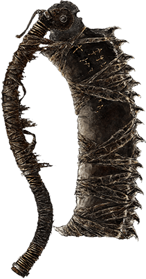
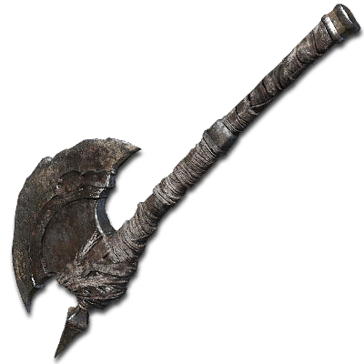
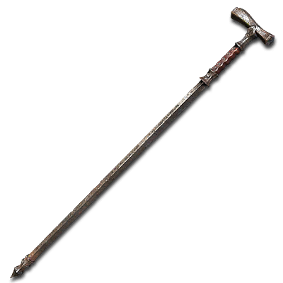
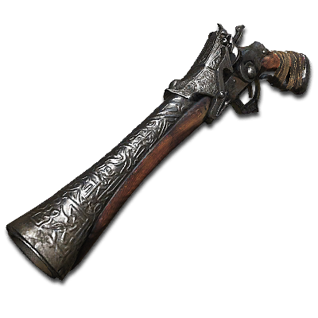
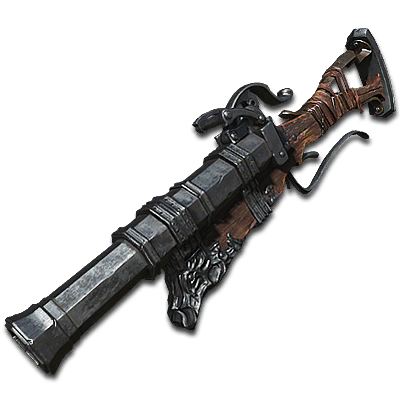

Weapons
Right before starting, it is importante to note that at the beginning of the game you have no weapon or any kind of tool to help you do your job: hunt. Nevertheless, after dying for the first time or finding your first lamp, you can choose among a total of three weapons. They are:
-
Saw Cleaver

Being the one used in the trailer, no surprises this is the strongest: it has improved damage against beat-type monsters and scales well with both Strength and Skill.
-
Hunter Axe

I am not very well-acquainted with this one due to its moveset, which is not of my taste, and its scaling mostly with strength. The weapons pro is: great range, esp. when transformed.
-
Threaded Cane

A skill-based weapon with lower damage than the other two; however, it does have a fast moveset and, when transformed into a whip, its range, both horizontally and vertically, increases.
Guns
Different from previous FromSoftware games, Bloodborne does not provide shields, therefore neither incentivizes blocking. In their place, another kind of equipment is set: the guns, used to parry your enemies in the correct timing or to amount a very small damage to your combo - unless you are using an item to increase the power of your gun. Instead of three choices, you have two options, about which I do not have as much knowledge:
-
Hunter Pistol

My personal favorite - and actually the only one I used - the Hunter Pistol shoots one bullet at a time and it does not have a great range, but fulfills its purpose majestically.
-
Hunter Blunderbuss

Without any personal experience, the Hunter Blunderbuss works as a shotgun: shooting 2 bullets at a time, it has a bigger AoE and a smaller range. More difficult to parry with.
Given the introduction to initial weapons, it is essential to add that, besides these, there are many others to be found or bought throughout your campaign. I strongly advise you to be as thorough as you can: explore every corner of every place you go to - unless it's nightmare frontier, definitely the worst possible place to be patient. Oh, and one more thing: be prepared to die continuously, but try to learn from each death of yours.